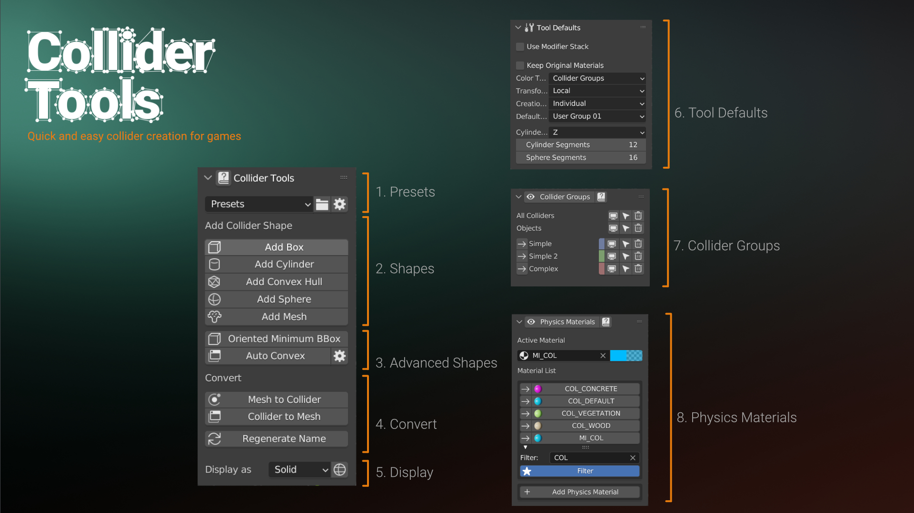
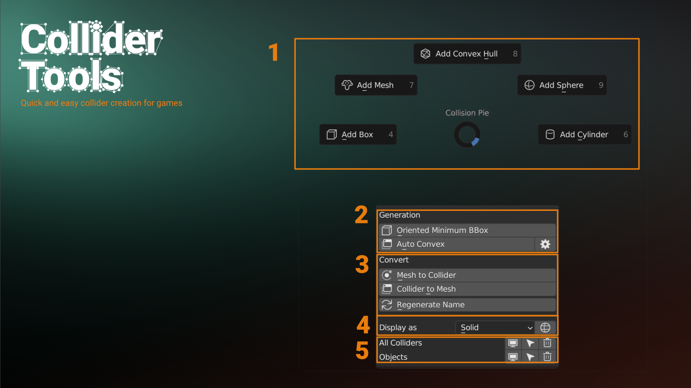
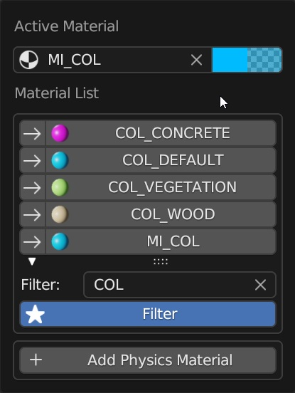

The Side Panel
The Collider Tools addon has a simple but powerful UI. The main elements of the UI are the Pie Menu, The Collider Panel in the properties panel (N-panel), the preferences for lesson often used settings, and the Viewport elements appearing during the creation. The Collision Panel is located in the properties panel (or N-Panel) and offers the same functionality as the pie menu and more.

- Presets: Presets are used for naming and grouping of colliders. They can be created and modified from the preferences.
- Shapes: Start the collider creation operation (Box, Convex, Cylindrical Convex, Sphere, Mesh)
- Auto Convex: Start the auto convex collider creation. This required the V-hacd executable to be assigned. See: Auto Convex
- Convert: Convert meshes to collider and vise versa. Regenerate the naming based on the prefab settings.
- Display: Change display settings to be either wireframe or solid
- Collider Groups: Group, select, show and hide colliders
- Physics Materials: Filter, create and assign physics materials
Popups
Pie Menu (Shift + Ctrl + C)
The pie menu can be accessed by pressing Shift + Ctrl + C in the 3D viewport. It is the fastest and most convenient way to generate colliders.

- Start the collider creation operation (Box, Convex, Cylindrical, Sphere, Mesh).
- Visibility and Selection. Show/Hide and Select/Unselect colliders. You can group colliders by complexity and change the visibility or selection for each group or all.
- Convert mesh to collider and collider to mesh. You can also convert every mesh to be a collider. All collider-specific properties and naming conventions will be applied to the converted mesh. You can also convert any collider to be a regular mesh. This removes all collider-specific properties from the mesh.
- Auto Convex
Collider Groups (Shift + P)
The Collider Groups panel can also be called as popup. Hotkeys are specified in the addon preferences.

Physics Materials (Shift + Ctrl + P)
The Physics Materials panel can also be called as popup. Hotkeys are specified in the addon preferences.

Viewport Overlays
Most operations of this addon will enter a special mode, the so-called modal operator in Blender. This happens for any of the collider shape tools, the auto convex, and the conversion operation from mesh to collider. You can use different keys and mouse movements to modify the generation of the colliders. The options presented are operator sensitive, meaning that not all operators will show the same options. The current values and the keys to manipulate the values are shown in the viewport overlay as seen below. The following list contains all keys and settings for the different operators as well.

- Operators Settings: Properties are reset every time the operator is called.
- Persistent Settings: Value changes will be remembered in future operator calls.
Preferences
The preferences contain customization various options like naming, addon keymap, addon theme and auto convex collider generation.
- General: Containing Generic settings like should they be linked to a "Collision" collection or not.
- Presets: Change the naming pattern used to name the colliders as well as other.
- Ui: Change the UI font sizes and colors as well as the Collider Tools tab name. You can also change the collision group colors from here.
- Keymap: Change the hotkeys for the Popup menus.
- Auto Convex: Contains all settings related to Auto Convex collider generation.